Step by step: what was there, what we did, what came out
Eitan Frenkel · meeting with Erez Karpas · 16 November 2026
The task
One robot, one rope: from straight to a knot
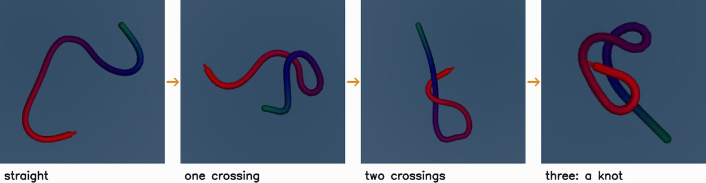
One grab at a time. The test: 100 target shapes, 25 each with 1, 2, 3 and 4 crossings.
MODELS IN THIS RUN
the paper’s reader + the paper’s grab
Step 1 · 24 Aug to 5 Oct
First, a fair test
There was
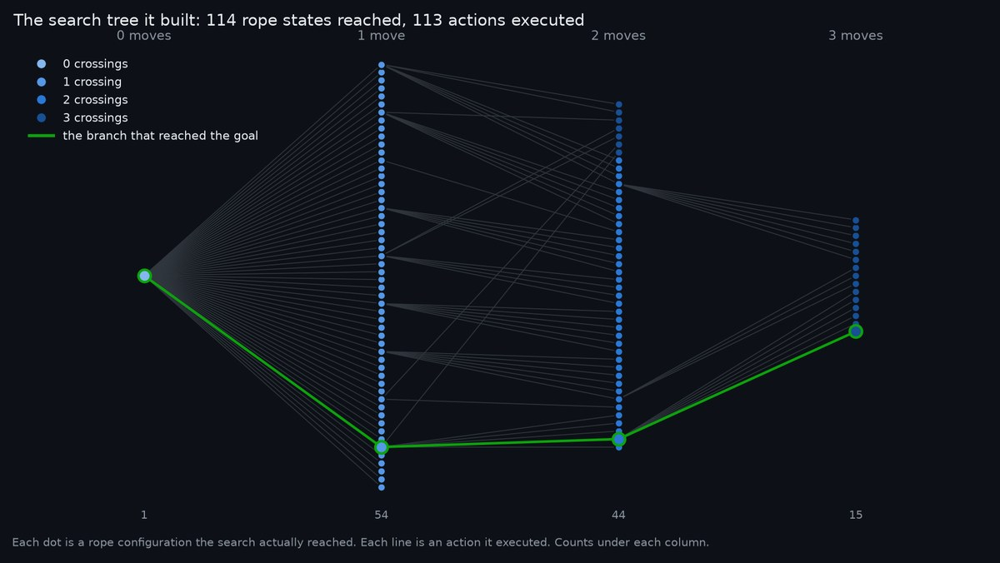
A score from 15 robots searching with rewinds. The simulator says “tied”.
→
So we
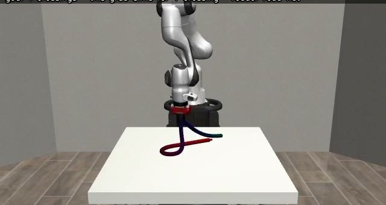
Built one test: one robot, one rope, no rewinds, 100 knots.
→
Result
34
of 100 knots
25 · 8 · 1 · 0 at 1, 2, 3, 4 crossings, 25 each
The paper’s system on our test, bugs fixed, 5 Oct. 20 minutes per knot.
The road
From 34 to 78 knots of 100, while the rules got harder
Each point: one run of the same 100 knots, simulation; small: of 25 at 1, 2, 3, 4 crossings. Grey: the paper’s system. 20 min per knot, 60 from 18 Oct. Mixed steps: 34 → 54 also changed the reader (grab alone: 33, 25·7·1·0, → 54); the paper had 31 just before its 20; 18 Oct also grab B2, no re-centring; 2 Nov also calibration off the clock. The paper’s 20 and 27 kept the simulator’s re-centring and reset.
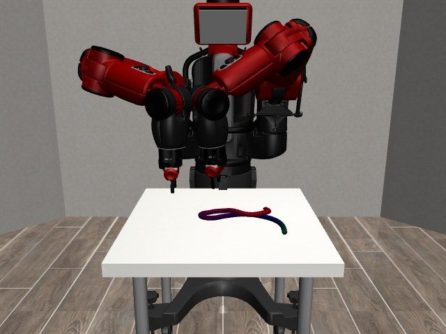
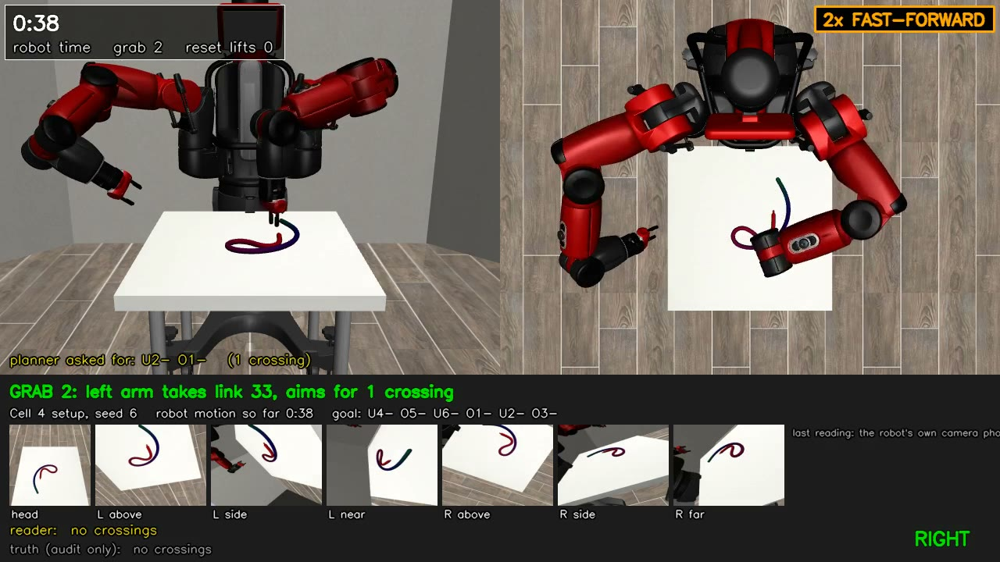
Step 2 · September
Read the rope from the robot’s own cameras
There was
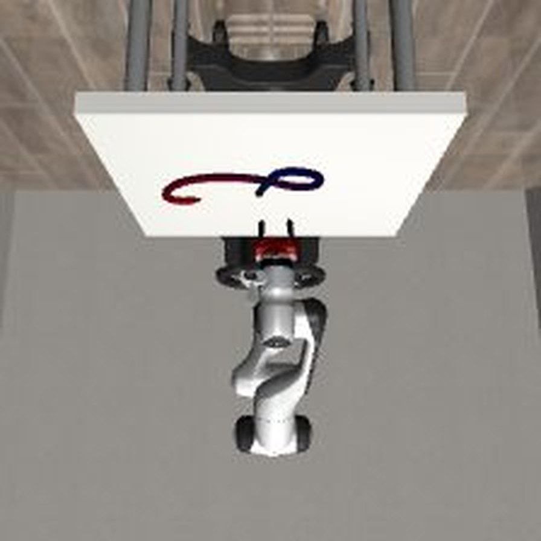
One fixed camera in front of the table. Knot read right: 68.5%.
→
So we
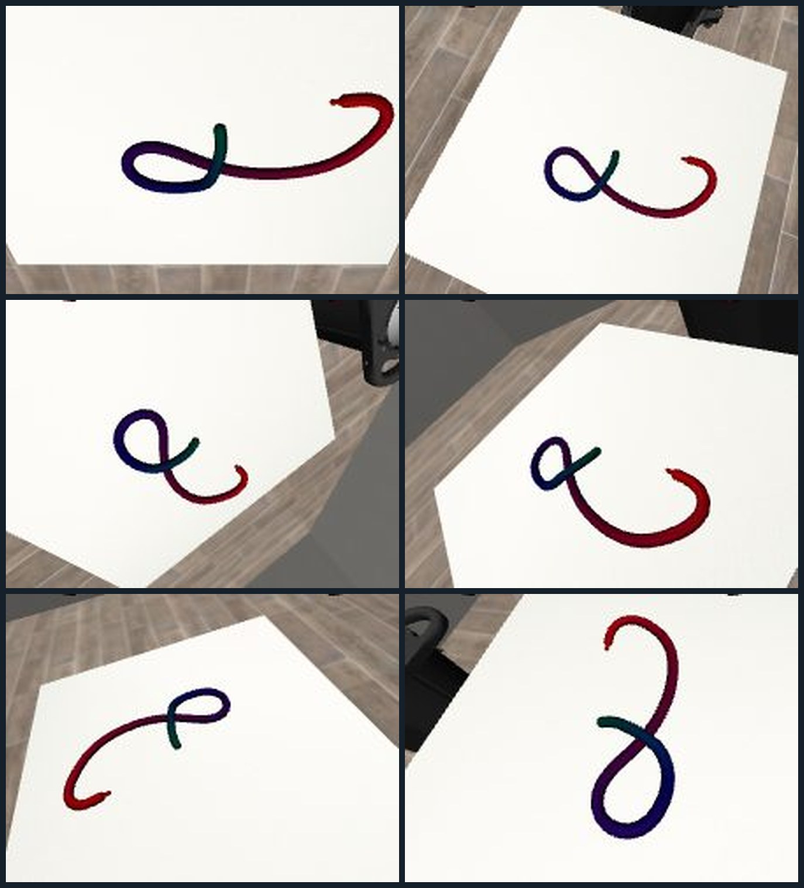
Let the arm take the photos: base camera plus five from the wrist.
→
Result
95.2%
knots read right
17,138 test states. The paper’s reader on the same states: 68.5%.
Step 2 · robustness · 20 Sep to 7 Oct
What breaks the reader, and training against it
→
Result
85 to 93%
on rope colours never seen
was 31 to 38%
91.2%
on the rope it knew
was 95.4%
Panda, simulation. 150 ropes per new look; 2,000 test ropes it knew.
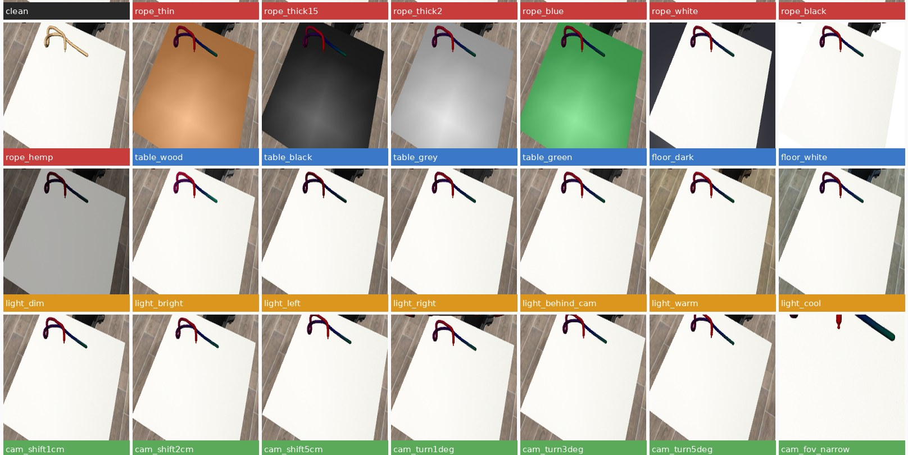
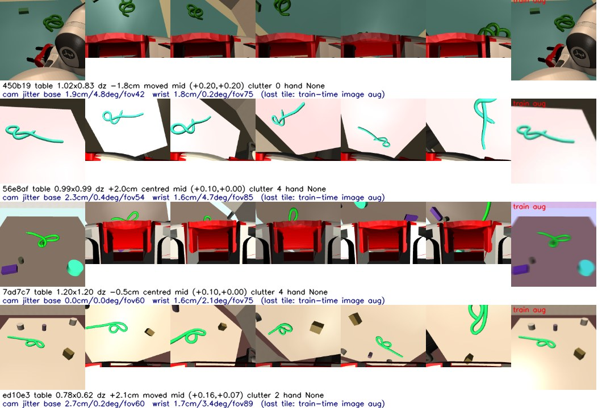
On the way · 5 and 25 Oct
Two traps under the paper’s code
Paper’s planner
A limit built for a flat start. No plan from a rope that already has crossings.
→
Caused in the paper
Nothing: it always rewinds to the flat rope. Without rewinds it cannot go on from a half-tied rope.
→
Fix
Passed the right limit.
→
14 → 40 of 40
states with a plan
Paper’s data + ours
Test ropes copied in training. 24 of 200; the simpler ones mostly from the paper’s own set.
→
Caused in the paper
Its held-out ropes are not all unseen. Its grab model: 4.9% with the copies, 4.7% without.
14 · 34 · 25 · 11 · 3 of 15 · 37 · 28 · 16 · 4 at 0 to 4 crossings
Baxter Cell 2, 29 Oct. Reading: 100 test states, coloured rope. Same run: reach check and a gentler lift reset.
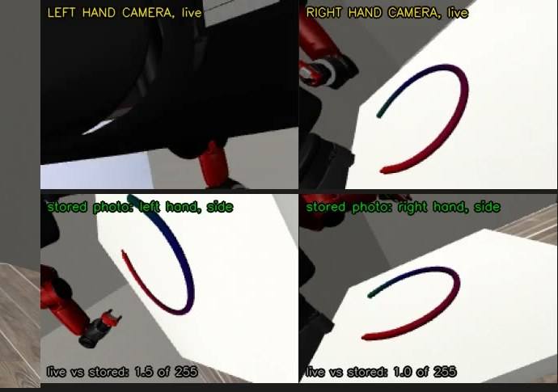
Vision-3
ran in Baxter Cells 4 and 5: 61 and 78 of 100
Step 8 · reader Vision-3 · 30 Oct to 1 Nov
Vision-3: trained on ropes anywhere on the table
→
Result
21.3 → 9.2
mm off, ropes near the table edge
84 → 85
of 100 knots read right: level
100 Baxter bench ropes, painted rope, simulation; 30 of them near the table edge.
D8
ran in Baxter Cells 4 and 5: 61 and 78 of 100
Step 8 · grab model D8 · 30 Oct to 1 Nov
The drop as one bell moved it
Share of single grabs that land, simulation. Mixed set: 200 held-out test ropes, 50 each at 0 to 3 crossings. Planner row: rope where it lies, 2 crossings, the planner’s own ask as target, 150 held-out ropes; its own scale. B rows: 1,000 and 750 grabs; C and D: one grab per rope. True rope points. D8 by crossings, flat · 1 · 2 · 3: 68 · 62 · 36 · 0%.
MODELS IN THIS RUN
Vision-3 + grab D8
run before: Vision-1 + grab C7.2
Step 8 · Baxter Cell 4 · 31 Oct to 2 Nov
Baxter Cell 4: 61 of 100
Baxter Cells 3 and 4, 31 Oct and 2 Nov, 60 wall-clock minutes per knot. Four changes at once: no single cause.
MODELS IN THIS RUN
Vision-3 + grab D8
run before: the same two
Step 9 · Baxter Cell 5 · 4 to 5 Nov
Baxter Cell 5: 78 of 100
Baxter Cells 4 and 5, simulation; splits at 1, 2, 3, 4 crossings, 25 each. Per grab 19.0 → 19.1%: fewer hits, not a better grab.
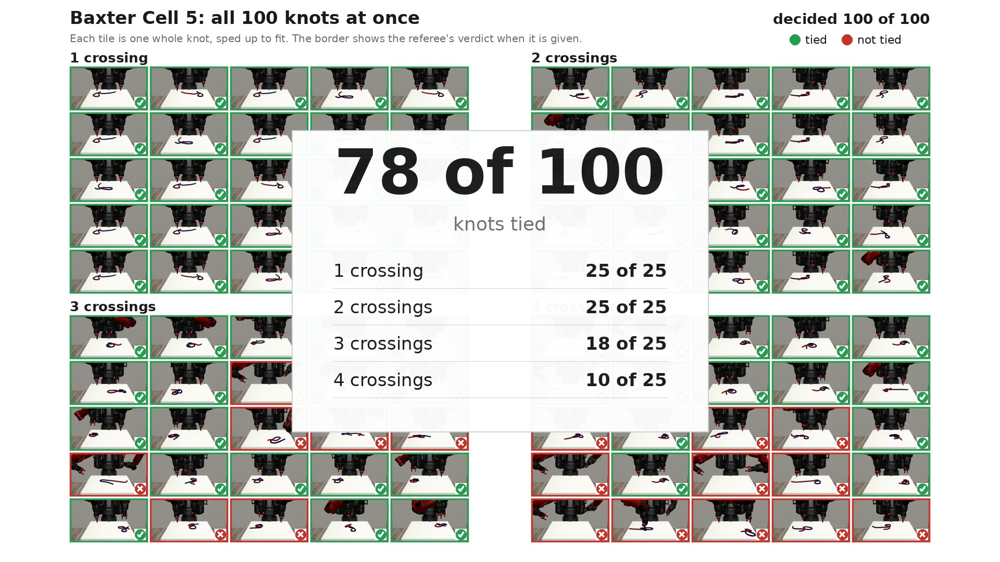
Step 11 · the real Baxter · 5, 8 and 9 Nov
First days on the real Baxter
Lab days on the real Baxter, wrist camera, white rope on the table.
Vision-4
no full run yet
Step 11 · reader Vision-4 · 4 to 6 Nov
Vision-4: trained on ropes with no colour ramp
→
Result
37 → 62
of 100, one-colour rope
knots read right, Vision-3 → Vision-4
86 → 92
of 100, painted rope
knots read right, Vision-3 → Vision-4
100 Baxter bench ropes, 20 per level, simulation.
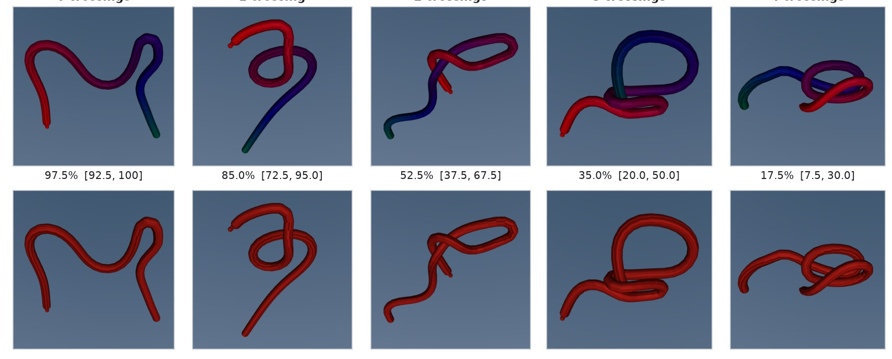
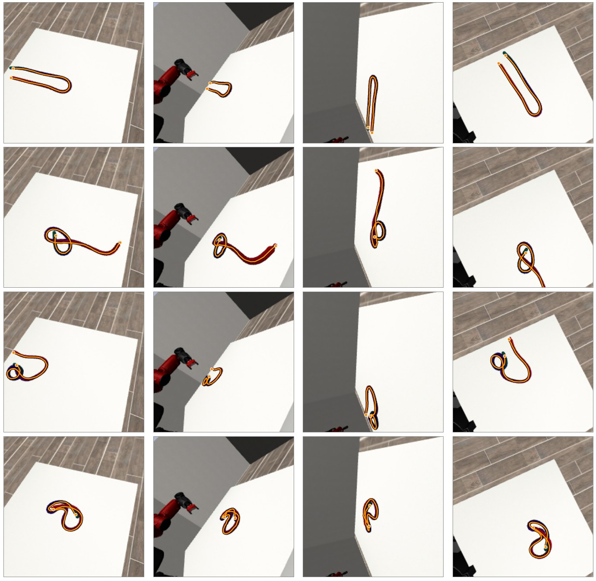
Vision-5.3
no full run yet
Step 12 · reader Vision-5.3 · 10 to 14 Nov
Vision-5.3: zoomed cut-outs from four wrist photos
→
Result
7.40 → 7.36
mm shape error
painted rope, Vision-4 → Vision-5.3
92 → 85
of 100, crossings counted
painted rope, 7 photos → 4 wrist photos
100 Baxter bench ropes, simulation. Not yet: a whole-knot number, the one-colour rope.
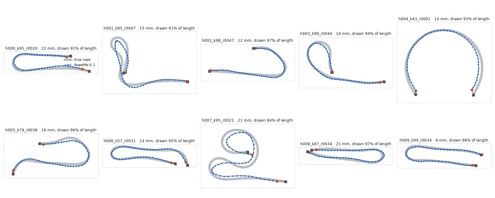
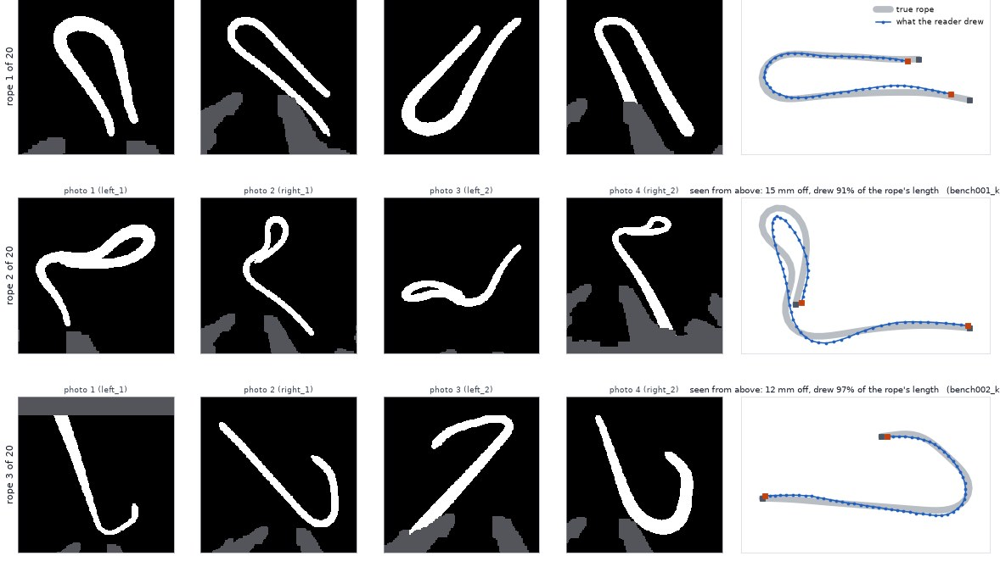
Step 12 · what the reader sees · 11 Nov
What the new reader sees: the rope cut out, in grey
Simulation, one bench rope with 1 crossing; the green ring is the crossing. No colour reaches the reader, as on the real one-colour rope. Crossings counted right on its 100 bench ropes: 67; Vision-4 on colour photos: 92.
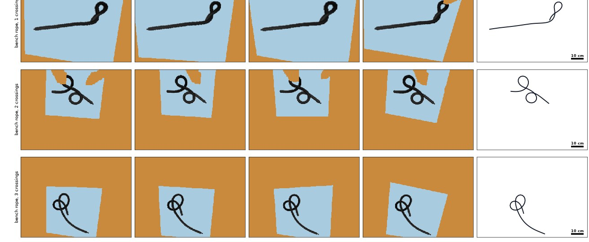
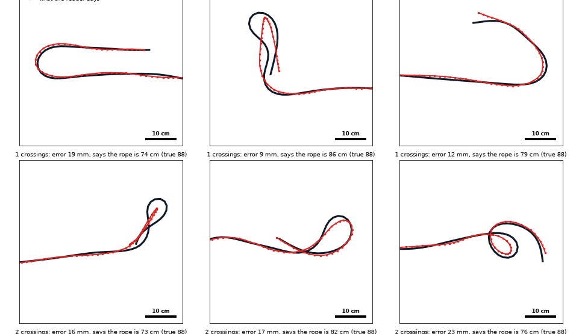
The grab model · 2025 to 8 Nov
The grab, version by version
Per grab that lands, simulation. Mixed set: one draw 1,000 grabs (B6: 850, on 170 of the ropes), C and D 200 grabs. Planner row: one draw 750 grabs, C and D 150 grabs.
The reader · September to 14 Nov
The reader: what is done, what remains
Simulation. Every number: the same 100 Baxter bench ropes, 20 per level, painted rope unless named. Only the new-colours line is another test: Panda, 150 ropes per colour. Real-arm cameras: six wrist poses that shift, with calibration error.
Summary · the models today
Four small networks: what goes in, what comes out
Simulation. Reader: the 100 Baxter bench ropes, painted rope, 7 photos (head + 6 wrist views). Grab: 200 mixed ropes. Full runs so far: Vision-3 (these networks, one training earlier) + D8, Baxter Cell 4 61 of 100, Cell 5 78. Planner: the paper’s search, not learned.